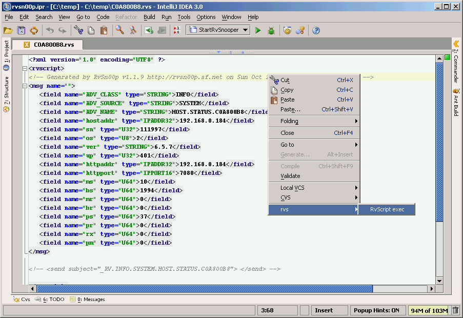

Startup screen
When you startup RvSn00p you find the main interface
screen that shows you a log table of the captured TIB/Rv messages.

Full text searching
Support for full text search of subjects and message contents.

Log table views
You can decide wich columns you want to see in the logging table.

Subject explorer
The subject explorer displays the Rv subjects in a
hierarchical tree-like fashion. You can use this to browse through
your subjects and filter out the subjects you are not interested in.
Use the subject explorer to filter incoming messages. By deselecting a
checkbox on a node, you remove all messages from that tree path from
the log view.

Selecting and deselecting subjects
When a subject node in a hierarchy is deselected, no messages at that
level or below will appear in the Log Table.
To quickly select or deselect subjects in the
hierarchy, the right-mouse button can be used to bring up the context
menu as displayed below. The context menu can also be used to expand
or collapse the hierarcy.

Save configuration
When you choose the Configuration->Save option
from the menu bar, the hierarcy that you currently have selected are
saved to your local file system. This means that the next time you
start up RvSn00p you will not need to reselect subject you are
interested in.
RvSn00p also allows you to remove your saved configuration, and to
configure the maximum number of records that will be displayed at any
time in the logging console. Setting the maximum number of records to
display allows you to optimize RvSn00p's performance for your
system.

Save as file
You have the option to save all messages to a html or
rvscript xml file. Or save one message to a rvscript file.
Example html output:
Example rvscript output:

Örjan
Lundberg and Stephanie Lundberg 2002 E-mail:
lundberg@home.se.